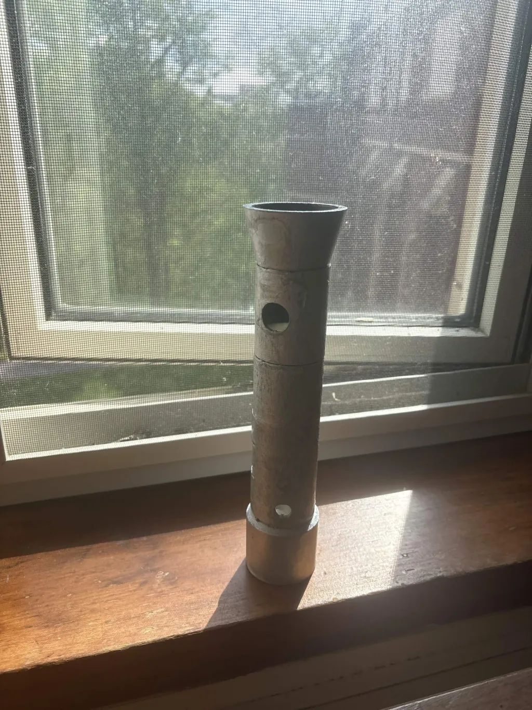

The system has two pieces. The pen itself uses a Raspberry Pi Zero 2W, which is small enough to fit inside a handheld 3D-printed shell. Inside the pen we have an APDS-9999 color sensor at the tip, an SSD1306 OLED screen that gives the user feedback during a scan, a momentary push button that triggers the scan, and a ring of white LEDs around the sensor to light up the surface being scanned. There was also the plan of a removable cone over the tip that holds the LED light strip and blocks ambient light when the user wants a more "true" reading, or can be left off when the user wants to capture the color as it appears in the current lighting; unfortunately, this part had to be removed before our demo as it was causing issues in the color accuracy. The base station is a Raspberry Pi 4. The Pi 4 runs a Python program written with Flask that does two things at the same time: it serves the web dashboard, and it listens for Bluetooth data coming from the pen. Both of these run in parallel using Python's threading module so they don't block each other.
When the user presses the button on the pen, the Zero 2W starts a 7-second scan window. During this window, the OLED plays an eyedropper animation so the user knows the device is working and not frozen. The sensor reads RGB values continuously during the window, and at the end the most recent reading gets calibrated, packaged into a JSON string, and sent over Bluetooth RFCOMM channel 1 to the Pi 4. The Pi 4 receives it, does all the color math, and updates a global variable that the dashboard reads from. The dashboard polls the server once per second, so within a second of receiving the data, every connected device shows the new color.
We worked on the project in roughly six stages.
Getting the sensor and OLED running: The first step was just making sure the APDS-9999 and SSD1306 worked. We wired them up on a breadboard and used the Adafruit CircuitPython libraries to talk to them over I2C. Once both I2C devices were recognized, we utilized the PIL library to write text and upload an animated gif to the OLED screen to represent what state it was in. We then used the adafruit_apds9999 library to interact with the color sensor, setting the sensor to RGB mode and reading the values by assigning the property rgb_ir to the sensor object. Once we could read RGB values from the sensor in the terminal and draw to the OLED, we knew the basic hardware was working.

Photo of the circuit prototype, showing the scanning animation.
Bluetooth between the two Pis: Once the pen-side hardware was solid, we needed to get the two Pis talking to each other. We used PyBluez and an RFCOMM socket on channel 1. We had to manually pair the two devices using bluetoothctl first, and we hardcoded the Pi 4's MAC address into the pen's script so it always connects to the same device. This step took longer than expected because we kept running into "address already in use" errors and "connection reset by peer" errors that turned out to be caused by old versions of the script still holding the Bluetooth port from a previous run. We fixed this by writing a clean restart procedure: kill any old processes, restart the Bluetooth service, then start fresh.
Color math and naming: With Bluetooth working, we shifted to the math side. We wrote functions for converting RGB to hex, RGB to CMYK, and RGB to HSL. The HSL conversion was important because it lets us calculate complementary and analogous colors easily; we just rotate the hue 180° for complementary or ±30° for analogous, then convert back to RGB. We also added a closest-color-name lookup using a database of about 30,000 named colors from a project on GitHub called meodai/color-names. The lookup treats each color as a 3D point with red, green, and blue as the axes, then loops through every entry in the database and calculates the Euclidean distance to the scanned color. Whichever has the smallest distance is the name we return. This sounds slow but it actually runs in around 50 milliseconds, which is fast enough that the user doesn't notice.
Calibration: This was one of the parts we didn't anticipate as being essential going in but turned out to be very necessary. Our raw sensor readings were systematically biased. A red object would scan as orange, a blue object would scan as light purple, a green object would come out as washed-out mint. We figured out two things were happening. First, the green channel of the APDS-9999 is naturally more sensitive than red and blue, so even pure white paper returned uneven values. Second, even after correcting for that, the secondary channels were still bleeding into each scan, so colors came out desaturated. We fixed the first issue by holding the pen against printer paper, recording the raw readings, and computing per-channel weights that make white come out as white. We fixed the second by adding a saturation transform that raises each normalized channel to the power of 2.5, which keeps the dominant channel near full intensity but pushes the smaller channels closer to zero. After both corrections, we scaled the color's components from 20 bits to 8 bits by normalizing it against the color with the highest value and multiplying it by 255 to help display it on the website. Even with the lose of information scans looked much more accurate due to the previous corrections.
Exports: We wanted users to actually be able to save their palettes, so we added two export formats. The JPG export uses the Pillow library to draw a grid of colored swatches, each labeled with its hex code and color name. We chose the text color (white or black) for each swatch dynamically based on the brightness of the swatch background, so the labels are always readable. The ASE export was harder. We initially tried a Python library called swatch to generate Adobe palette files, but it kept throwing exceptions during file generation and we couldn't get a clean output. After a few attempts at debugging it, we decided to just write our own ASE writer. The ASE format is fully documented by Adobe; it's a binary format that starts with a 4-byte "ASEF" signature, has a version header and a count of color blocks, then each block contains the color name in UTF-16 big-endian, the literal string "RGB " as the color model, three 4-byte floats for the R, G, and B values, and a 2-byte color type tag. We used Python's struct module to control the byte layout exactly, and our writer produces files that open correctly in Adobe products and most third-party tools.

Palette being exported as a JPG image
Dashboard polish and final assembly: Towards the end we focused on making the dashboard look clean. We designed a dark-themed UI with a custom font, sidebar palette layout, and a separate canvas page where users can draw with their saved palette colors. We added a QR code feature so audience phones could pull up the dashboard during the demo. The QR code initially didn't work outside the room because the Pi 4 was picking its public Cornell IP, which is firewalled. We fixed the IP detection function to prefer private network ranges (10.x, 172.x, 192.168.x) so the QR shows a reachable address. The pen shell went through three 3D print iterations and, with some final edits to the circuit, the pen was able to be assembled and work as intended minus the LED light strip and the funnel at the top.
The final pen case after being painted.
The ASE library issue was one of our software roadblocks. We spent some time trying to figure out why the swatch library was failing before deciding it was faster to write our own. Reading the Adobe spec and implementing the byte-level format took a couple hours but gave us full control over the output. Looking back, this was the right decision because we now don't depend on an external library that could break with future Python updates.
The calibration problem was most tricky because it wasn't obvious at first that the readings were wrong; the sensor was clearly responding to colors, just not accurately. We figured it out by scanning a piece of white paper and noticing that the raw values weren't equal across channels like they should have been. Once we knew what to look for, the fix was straightforward.
Networking was the most frustrating challenge because it wasn't really a code problem. Cornell's eduroam network has client isolation enabled, which means devices on the same network can't talk to each other even if they have valid IPs. Our QR code worked fine on RedRover but not on eduroam, and there was nothing we could do in code to fix that. The actual fix was using a phone hotspot for demos, which gives us an open network we control.
Hardware wise, the pen shell went through three 3D print iterations; the first had tolerance issues at the snap-fit joints, the threads didn't print correctly, and the internal cavities were too tight for the components. The second print, with looser tolerances, allowed for some of the components to fit correctly, but the tolerances for the threads on the middle piece were still too small. With a final edit and print, the pen pieces fit together, but there were issues with fitting the Pi Zero 2W within the pen with the original design that included the power module and battery and the female-to-female header wires added where the pi couldn't even get inside the piece it was meant to go in. After scrapping the power module and battery, organizing the wires, and finding a new spot for the pi to squeeze into, the pen was able to fit together. Some of the wiring also broke during assembly due to tension in the wires being bent and pulled through the pen, but it only had to be resoldered and have longer heat shrink to ensure the stripped wire was protected completely. Also, due to the method of calibration, the LED light strip had to be scrapped as we ran into issues of it leading to the scanned color being read as green rather than the surface's true color with the LED light strip helping block ambient light.
We tested the system at three levels. At the component level, we confirmed each part worked individually: sensor returned RGB, OLED rendered images, button triggered events on GPIO4, Bluetooth could pair successfully.
At the subsystem level, we verified the Bluetooth listener parsed JSON correctly, each color math function returned correct values for known inputs, and the color naming worked for representative colors.
At the system level, we did end-to-end tests with the pen scanning known colored objects and verifying the dashboard updated correctly across multiple devices. For the calibration in particular, we tested by scanning a series of objects with known colors: a red pair of scissors, a blue lightbulb, a green cloth, white paper, and a black box. Then we compared the dashboard output to what those colors should look like. This is how we tuned the weights and the saturation power until scans matched expectations.